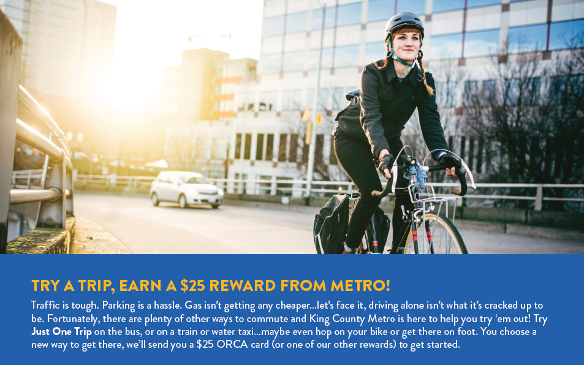

Tools Used
- Building Motivation Over Time
- Financial Incentives and Disincentives
- Norm Appeals
- Obtaining a Commitment
- Overcoming Specific Barriers
- Mass Media
- Word of mouth
Initiated By
- King County Metro
Partners
- 13 cities, non-profits, and other organizations
Results
- Reduced four drive-alone trips per person per week (40.58 vehicle miles and 37.57 pounds of CO2e)
- Contributed to a 4% decrease in the number of regional drive-alone commute trips from 2018-2019
Downloads
- Case Study PDF
- Consolidated report for Just One Trip Phase I and II and additional programming
Landmark Case Study
Seattle’s Just One Trip Phase II
Just One Trip Phase II illustrates the use of Propensity Modelling / Predictive Analysis, Street Ambassadors, Quality Online User Experience (UX), and trip planning to reduce the proportion of single-occupant car trips in Seattle WA, USA. It engaged over 21,000 people and on average participants reduced four drive-alone trips per week per person. Designated a Landmark case study in 2020.
Background
Seattle metro area was one of the fastest-growing U.S. cities, and was ranked the sixth worst U.S. city for traffic. While many residents took transit, biked, walked, teleworked or rideshared, to curb congestion, more needed to get onboard.
Seattle’s regional transit agency, King County Metro, had a cornerstone program outreach program, Just One Trip, designed to raise awareness of green travel options and recruit new riders. The four-year program was divided into two 2-year phases. Phase I, from 2016-2017, focused on raising awareness, with a far-reaching ad campaign (86 million paid impressions) that led to one in two regional survey respondents saying they had seen communications related to replacing drive alone trips with alternative options.
By the end of Phase I, 5,000 residents had pledged to reduce their drive-alone trips, removing 100,000 annualized vehicle trips off the road.
For the second half of the program (Phase II, from 2017-2019), Metro wanted to move more people from awareness to behavior change - riding transit, biking, walking, teleworking, or ridesharing.
 Map courtesy of Mapcruzin.com
Map courtesy of Mapcruzin.com
Setting Objectives
The objectives for Phase II of Just One Trip were as follows.
- Recruit 15,000 people to pledge to try an alternative to driving alone.
- Motivate those participants to shift a total of 400,000 drive-alone trips to an alternate mode of travel.
Getting Informed
Using propensity modeling software, the research team cross-compared vast data sets, including Metro’s past program participant lists and a wealth of independent consumer data, to reduce a universe of 400,000 potential participants down to the 150,000 most likely to take transit, bike, walk, or rideshare. The team also identified ZIP codes with a high concentration of high-propensity residents, who also had easy access to frequent bus routes.
To identify high-propensity households, the program’s data contractor developed a regression model utilizing the following process:
- Entered data files including individuals who had exhibited the target behavior in past programs
- Compiled existing data and identified variables indicating positive cases/high propensity and variables indicating negative cases/low propensity (including variables such as hobbies, age, education level, family formation, and more)
- Appended 400+ variables from U.S. Census and Household specific data
- Ran the regression model over the travel shed areas
- Analyzed output data to identify households with high likelihood to exhibit the target behavior
- Created an implementation file scoring each household
In addition, to get a sense of the audience’s barriers and benefits, Metro aggregated its past programmatic research from a series of neighborhood and regional programs conducted throughout the county.
Metro also surveyed 1,600 households in the region.
- 64% agreed that “Offering incentives or rewards are an effective means to encourage people to change their travel behaviors.”
- When exposed to Just One Trip messaging, 51% said they personally connected with the messaging, and 33% said the messaging made them seriously consider reducing the number of drive-alone trips they make.
 Spanish Facebook ad
Spanish Facebook ad
The program targeted 150,000 English- and Spanish-speaking households. While all residents of Seattle and King County were eligible, this program sought to identify and focus outreach on those with the highest propensity to take transit, bicycle, walk, telework or rideshare.
The program was transcreated into Spanish, the second most-spoken language in King County (after English).
Linguistically, transcreation seeks to avoid the pitfalls of traditional word-by-word translation, which doesn't take into account context or culture. For example, in Spanish “bus” can be called autobús, buseta, bondi and omnibús, depending on the culture and context of the audience.
The approach itself was transcreated for King County’s Spanish speakers, with strategies designed to address key barriers for engaging multicultural and multilingual communities with government programs. Past transit outreach had shown that in this community, face-to-face outreach in a trusted setting was far more effective than collateral, ads and other tactics. While the program did utilize mailings and ads in Spanish to reinforce the message, the heart of the Spanish outreach was partnerships with trusted community-based organizations, which facilitated face-to-face outreach in trusted settings, featuring bicultural, bilingual staff.
Delivering the Program
Once high-propensity households and ZIP codes were identified, the campaign maximized budget by targeting every outreach tactic to them, reaching them multiple times in different ways:
- Mailings to their homes
- Ads served to their devices
- Events in their neighborhoods
Outreach tactics were chosen based on successful results from previous travel behavior change campaigns and scaled for deployment to high-propensity households and ZIP codes throughout the metro area. Public outreach was conducted from March 2018-April 2019.
Creative
Phase I research (through an online survey panel of King County drivers) tested multiple creative concepts, and the concept of Just One Trip resonated the most with survey takers. Like other successful campaigns for dieting or exercise, Just One Trip asked drivers to make small changes to experience big benefits. Since the campaign could not promise a shorter commute, the creative focused on a more relaxing one, from napping to knitting on the bus. (Building Motivation, Engagement and Habits Over Time; Vivid, Credible, Empowering Communication)

Website Redesign
The program website was redesigned to take residents through a streamlined journey laser-focused on conversion - getting them to take the pledge and complete the accompanying travel survey. The UX design worked – the pledge page was the most-visited page on both the Spanish and English versions of the website, with 82% of program signups submitted through the online travel survey. (Obtaining a Commitment)
Direct Mail & Incentives
An attention-grabbing mailer was created in English and Spanish and sent to the 130,000 households in the program area with the highest propensity for travel behavior change. The mailers achieved an above-average 3.1% response rate and led to a huge spike in online sign-ups the week they went out. Those who enrolled in the program were sent a customized packet of travel information and a $25 incentive based on their chosen travel mode. Incentives included a free transit pass or vouchers for free trips in a King County Metro vanpool, amongst others. Of all the selections, the transit pass was the most popular, accounting for more than three-quarters of the incentives distributed. (Financial Incentives; Personalized, Credible, Empowering Communication)
Top portion of English mailer
Travel Ambassador Street Teams
A street team of multilingual Travel Ambassadors trained in behavioral coaching techniques conducted outreach at events in hotbed ZIP codes. Their job description: don’t just hand out flyers and event swag—get the travel maps and sign-up forms out to help people navigate their barriers and determine whether a bus, carpool, vanpool, or bike ride might work for them. These Ambassadors put in more than 500 hours of face time at neighborhood and regional events, from local farmers markets to high-impact regional events with thousands of attendees. In total, the team signed up 2,855 residents on the spot. (Overcoming Specific Barriers; Vivid, Credible, Empowering Communication)
 Outreach event
Outreach event
Click-to-Convert Ad Campaign
A tiered advertising campaign focused the bulk of the ad budget on click-to-convert mechanisms like Facebook, display network, and local online placements. These were targeted to high-propensity ZIP codes and drove 98% of the program’s web traffic. Midway through the program, social ads were updated to utilize social norming, with text such as, “Did you know 17,000 of your neighbors are driving alone less? Join them and earn a $25 reward!” A supporting outdoor media buy helped establish reach and frequency in the priority areas (travelsheds), achieving 100,840,000 impressions while taking advantage of Metro’s transit exteriors. (Mass Media; Norm Appeals)
 English Facebook ad
English Facebook ad
Transcreation Into Spanish
The Metro Ambassador Program was a transcreated program approach designed to build trust within the Spanish-speaking community, increase access to the Just One Trip program among individuals with language barriers, and help navigate barriers associated with utilizing transportation resources. The program sent bilingual, bicultural outreach staff to meet the community where they were and help them sign up for Just One Trip. Through this face-to-face engagement, Ambassadors could build trust, answer questions about transportation options, and help community members who felt hesitant to try new modes of transportation. The Ambassador Program was the cornerstone of Just One Trip’s transcreation strategy and gathered most of the signups completed in Spanish. (Overcoming Specific Barriers; Vivid, Personalized, Credible, Empowering Communication)
The team partnered with community-based organizations to meet the audience where they were and to reach them through a trusted community voice. Based on recommendations from partners, bilingual outreach was provided at health clinics, tiendas (corner stores), local libraries, food banks, and at digital literacy classes and other courses at a community resource center. Just One Trip Ambassadors were able to gather 537 pledges through this outreach. The following table summarizes the key barriers and how each was addressed (Overcoming Specific Barriers).
|
Barrier |
How it was addressed
|
|
Unsure how to ride transit (where to catch the bus or train, which route to take, navigating transfers and timing) |
· Offered customized trip planning (online and over the phone) · Face-to-face behavioral coaching and trip planning at over 500 hours of events, to help residents navigate their barriers and commit to their new commute.
|
|
Unsure how to pay bus/train/ferry fare |
· The program offered pre-loaded ORCA cards (a regional transit smart card pass for bus, ferry, rail or train) good for several trips. · Unlike paper bus passes, these cards could be reused / reloaded. They included instructions for reloading online and at participating retailers and vending machines, opening the door to long-term behavior change. |
|
Concern about needing to get home quickly in an emergency |
· All participants were given a free Guaranteed Ride Home, good for one taxi ride up to 60 miles one-way, valued at $100, in the case of an unexpected emergency (like getting sick, having a family emergency, or having to unexpectedly work late). |
|
Need car for personal reasons after work, or had an irregular work schedule |
· The campaign emphasized flexibility with a call to change “just one trip”, allowing flexibility for the need to use other commuting modes some of the time |
|
Felt riding the bus was not convenient – due to geographic location, irregular schedule, etc.
|
· The campaign offered tools and incentives for a variety of green travel options, including ride matching for carpools and vanpools.
|
Financing the Program
The budget for this effort came from multiple sources and was split between various efforts. Parties who are interested in understanding more about the financial cost of this type of program are encouraged to contact Metro and/or C+C (see contact details below.)
Measuring Achievements
- Pre-Program Survey: As a required part of the enrollment process, all 21,162 participants completed an in-depth travel behavior survey at the start of the program (online or on paper).
- Post-Program Survey: A post-program survey asking the same set of travel questions was sent to participants at the end of the program, with prize drawing incentives to encourage participation. A total of 4,355 participants (20.5%) completed the post-program survey.
- Panel Analysis: The Washington State Department of Transportation conducted a cross-panel analysis of the pre- and post-campaign surveys to extrapolate trip reduction results using industry standard calculations.
- Regional Surveying: A three-plus year regional research program surveyed residents through a baseline survey, plus five additional rounds of sampling. The survey sampling used mixed-mode data collection (online and phone) and occurred in five waves throughout Phase I and II.
|
Survey Wave |
Number of Respondents |
|
Baseline: September 2016 |
1,573 |
|
Wave 1: September 2016 |
1,630 |
|
Wave 2: January 2018 |
1,019 |
|
Wave 3: May 2018 |
1,067 |
|
Wave 4: September 2018 |
920 |
|
Wave 5: January 2019 |
999 |
Results
Phase II of Just One Trip exceeded both program objectives:
Objective 1: Recruit 15,000 people to pledge to try an alternative to driving alone.
Result: In 13 months, the team motivated 21,162 people to pledge to try a new mode of travel. These results exceeded the Phase II stretch goal by 41% and quadrupled the existing participant number from Phase I, demonstrating that the program approach was highly effective. This represented 14% of targeted households.
Objective 2: Motivate those participants to shift a total of 400,000 drive-alone trips to an alternate mode of travel.
Result: Participants reduced 861,621 annualized drive-alone trips in the region, as measured by a Washington State Dept. of Transportation panel analysis of participants’ pre- and post-campaign travel surveys, using industry standard calculations. This represents 8,181,523 pounds of CO2 emissions reduced.
- A comparison of pre- and post- survey data showed significant reductions in drive alone travel among participants. Participants who took both the pre- and post-campaign surveys reduced 861,621 annualized drive-alone trips and 8,835,907 vehicle miles traveled.
- This represents 8,181,523 pounds of CO2 emissions reduced annually.
- If these numbers are extrapolated to the entire participant universe (beyond the 20.5% who took both the pre- and post-surveys), they amount to 4,183,942 trips reduced, 42,906,257 vehicle miles traveled reduced, and 39,728,637 pounds of CO2e reduced. This is the CO2 reduction equivalent to taking 3,893 passenger vehicles off the road completely for one year.
- The campaign asked participants to change one drive-alone trip. On average, individuals reduced 4 drive-alone trips per week, which in turn reduced an average of 40.58 vehicle miles traveled and 37.57 pounds of CO2e per week.
- If that behavior was maintained on an annualized basis, each individual would reduce 198 drive-alone trips per year, equating to 2,029 miles of travel and 1,879 pounds of CO2e.
- A legacy survey from Phase I of Just One Trip demonstrated enduring behavior change. Immediately following Phase I, participants had shifted 21% of commute trips away from drive-alone. Two years later, participants still retained a 14% shift away from drive-alone, compared to pre-program numbers.
- The post-program survey asked respondents which mode they tried instead of driving alone. Transit was cited by 62% of respondents who completed the form in English, followed by biking (11.4%), carpooling (9.8%), and walking (9.8%.) Similarly, respondents who completed the form in Spanish cited transit as the most common mode, (71.4%), followed by biking (14.2%), carpooling (9.5%), and telework (4.7%).
- Regional surveying found a small but steady 4% decrease in the number of drive-alone commute trips from 2018 to 2019. As of January 2019, the number of drive-alone commute trips (at the individual level) was the lowest reported over the course of the research (from 2016 to 2019). According to the research firm, “while not statistically significant, the increase in transit ridership during this same period suggests that this may be a real decrease in the number of drive-alone trips.” Researchers noted this was a positive sign, though it cannot be directly attributed to the Just One Trip program.
Contacts
Alex Hughan, PMP
Transportation Planner, Market Innovation Section
King County Metro
ahughan@kingcounty.gov
Erin Cawley-Morse
Vice President C+C
ecawleymorse@cplusc.com
Notes
- Moving from Awareness to Behavior Change
This approach proved cost-effective. In Phase II, the program recruited a whopping 21,162 participants, quadrupling the existing participant number, and scaling the program’s ability to reduce trips. Many of the same tools were offered in Phase I (commitments, incentives, trip planning), but the focused approach of Phase II drove a higher level of behavior change. Phase I drove valuable widespread awareness of the Just One Trip brand, which allowed Phase II to focus on moving more residents from awareness to behavior change.
- Propensity Modelling / Predictive Analysis
Governments often experience under-utilization of their programs, and face challenges in making residents aware of the tools they offer. This program offers a replicable structure for creating a CBSM-inspired program that gets these tools in front of the people most likely to utilize these tools to overcome their barriers.
Propensity Modelling / Predictive analysis is a new way of defining the audience for transportation demand management programs, which often define audiences by geography, employer, or demographics. Propensity modeling is being used by researchers and marketers in many disciplines, from healthcare research to tourism marketing. Finding those with the highest propensity to do a given behavior, then focusing efforts there, is a powerful way for programs with limited budgets and/or large project areas to use program funds effectively.
This has enormous potential in fields including:- Energy efficiency (for instance – defining those more likely to adopt higher-level measures like ductless heat pumps)
- Healthcare (for instance – defining those most likely to join a health-smart challenge)
- Waste management
- Water efficiency
This approach also gives program managers the ability to leverage work their organization has done over many years to recruit past participants, and cross-compare those individuals against consumer data sets to figure out who to prioritize next. Knowing how likely a person is to engage means that you can focus your resources and efforts on the individuals for whom engagement and the proper “nudge” will be more likely to lead to a meaningful change in behavior.
- Quality Online User Experience (UX)
Quality online user experience (UX) is often overlooked in behavior change campaigns, but effective UX was critical in this program, ensuring residents successfully made the commitment by taking the pledge. Once they did, not only did their perception of themselves begin to change, but it opened the door for the program team’s ongoing follow-up, encouraging them in their new behaviors and self-views, and providing additional tools.
Thoughtful UX was paired with conversion-focused online advertising. The success of this approach shows that behavior change practitioners have a meaningful opportunity to pair CBSM tools (social norms, commitments, prompts, and incentives) with tools from traditional advertising.
- Fine-Tuning Traditional Tactics
This program combined newer approaches with tried-and-true tactics, like events outreach and direct mail. It demonstrates that these traditional tactics can be effective if applied strategically. For instance, face-to-face outreach can be extremely effective in helping residents navigate complex behavior change, as long as outreach staff are trained in behavioral interviewing and not just handing out flyers. And direct mail can elicit a high response if sent to high-propensity audiences, using appealing creative and a clear call to action to commit to the next step.
- Potential Future Innovations
For future programming, it would be interesting to perform a by-participant analysis to see if there are trends in travel results based on referral method (for instance, whether someone who signed up at an event was more likely to reduce trips than someone who signed up via an online ad).
Author and Landmark Designation
This case study was compiled in 2021 by Jay Kassirer, based on information provide by C+C.
The program described in this case study was designated in 2020. Designation as a Landmark (best practice) case study through our peer selection process recognizes programs and social marketing approaches considered to be among the most successful in the world. They are nominated both by our peer-selection panels and by Tools of Change staff, and are then scored by the selection panels based on impact, innovation, replicability and adaptability.
The panel that designated this program consisted of:
- Wallace Beaton, Green Communities Canada
- Aaron Gaul, UrbanTrans
- Nathalie Lapointe, Federation of Canadian Municipalities
- David Levinger, Mobility Education Foundation
- Geoff Noxon, Noxon Associates
- Lisa Kay Schweyer, Carnegie Mellon University
- Phil Winters, CUTR and the University of South Florida